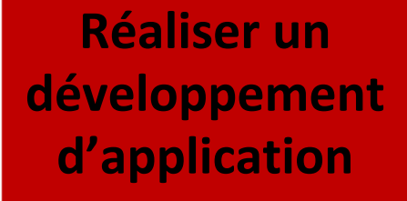

- Compétences critiques :
- Implémenter des conceptions simples
- Élaborer des conceptions simples
- Faire des essais et évaluer leurs résultats en regard des spécifications
- Développer des interfaces utilisateurs
Evaluations :
-
Ressources / SAE: R1.01 R1.02 R1.10 S1.01 Coefficient 42% 12% 6% 40%
-
Présentation de la SAE :
-
S1.01 Implémentation d'un besoin client
-
En partant d'un besoin exprimé par un client, l'objectif est de réaliser une application qui répond à ce besoin. Cette SAE permet une première mise en pratique du développement autour d'un besoin client.
-
Niveau horaire Total : 16h Heures de formations (dont TP) 4h Heures de "projet tutoré" (dont TP) 12h
- R1.01 Inititation au développement
- Apprentissages critiques de la ressource:
- Compétence 1 :Développer des applications informatiques simples
-
- AC1 : Implémenter des conceptions simples
- AC2 : Elaborer des conceptions simples
- AC3 : Faire des essais et évaluer leurs résultats en regard des spécifications
-
Descriptif détaillé de la ressource
L'objectif de cette ressource est l'inititation au développement. Les savoirs de référence suivants devront être étudiés :
- Algorithmes fondamentaux (structures simples, recherche d'un élément, parcours, tri ...)
- Algorithmes sur les structures de données (itératifs et/ou récursifs)
- Manipulation de listes, tableaux, collections dynamiques, statiques (accés direct ou séquentiels), piles, files, structures
- Types abstrait de données simples: première approche de l'encapsulation
- Notion de modularité
- Première notion de qualité (ex: nommage, assertions, documentation, sûreté de fonctionnement, jeu d'essais, performance...)
- Lecture / écriture de fichiers
- Présentation de la gestion de versions
Cette ressource est à la base des apprentissages des compétences 1 et 2. En effet, la réalisation d'un dévellopement d'application et l'optimisation des applications informatiques necessitent l'apprentissage de développement.
- R1.02 Développement d'interfaces web
- Apprentissages critiques de la ressource:
- Compétence 1 :Développer des applications informatiques simples
-
- AC3 : Faire des essais et évaluer leur résultats en regard des spécifications
- AC4 : Développer des interfaces utilisateurs
-
Descriptif détaillé de la ressource
L'objectif de cette ressource est d'apprendre les techniques de création de documents numériques sur le web en réponse au besoin client. Les savoirs de référence suivants devront être étudiés:
- Spécifications d'interfaces utilisateu, maquettage (sketch, scénarios, persona...)
- Les technologies d'affichage du Web (ex: HTML, CSS...)
- Tester la conformité des sites Web aux standards d'accésibilité W3C / WAI (World Wide Web Consortium / Web Accesibility Initiative)
Cette ressource est une concrétisation de la compétence 1 avec le support de la compétence 5. En effet, l'apprentissage des interfaces web est une base pour réaliser un développement d'application tout en appréhendant les besoins du client et de l'utilisateur.
- R1.10 Anglais technique
- Apprentissages critiques de la ressource:
- Compétence 1 :Développer des applications informatiques simples
-
- AC3 : Faire des essais et évaluer leurs résultats en regard des spécifications
- AC4 : Développer des interfaces utilisateurs
-
Descriptif détaillé de la ressource
L'objectif de cette ressource est d'introduire l'anglais informatique et de développer sa culture générale et scientifique. Les savoirs de référence suivant devront être étudiés :
- Décrire en anglais les éléments liés aux applications (interface utilisateur, bases de données, messages d'erreurs...)
- Savoir maîtriser les techniques de présentation orale 1
- Rendre compte à l'écrit ou à l'oral de façon informelle
- Utiliser la terminologie adéquate, les structures gramaticales adaptées et les outils de la phonologie
- Trouver, consulter et comprendre des ressources en Anglais (documentation, tutoriels,...)
Cette ressource permet l'acquisition du vocabulaire de base de l'informatique technique qui est utilisé très largement dans toute la discipline, en particulier dans les domaines les plus techniques.